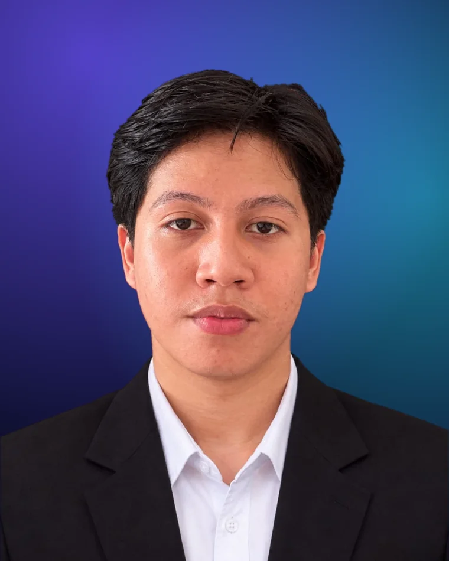
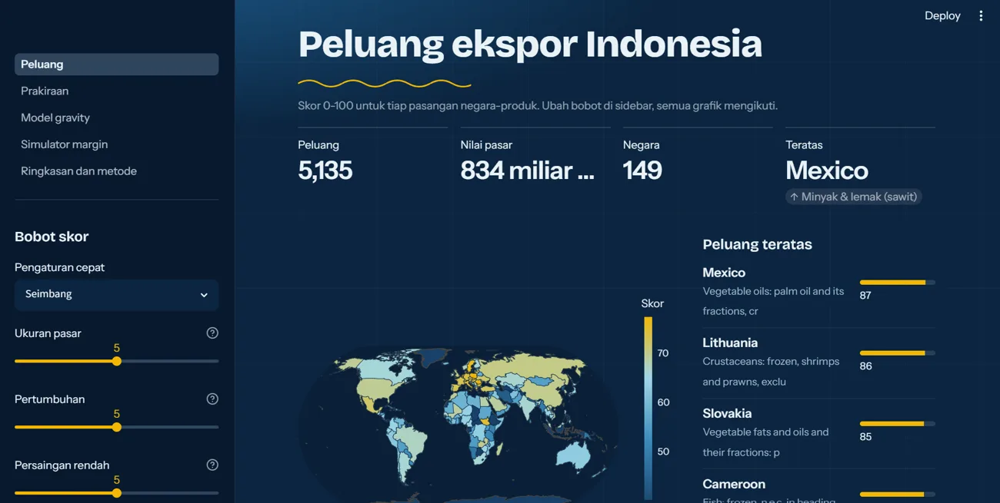

Profil singkat
Membuat data lebih bermakna dan mudah ditindaklanjuti.
Mahasiswa S1 Sains Data Universitas Negeri Surabaya yang tertarik pada pengembangan model prediktif, analisis statistik, dan visualisasi untuk menjembatani data dengan keputusan.
Halo, saya Bima Sena. Saya berfokus pada Data Analytics, Machine Learning, dan visualisasi data—membangun solusi berbasis data mulai dari forecasting hingga klasifikasi dan dashboard interaktif.

01 / Tentang saya
Saya senang mencari pola di balik data, menguji pendekatan secara terukur, lalu menyajikan hasilnya agar lebih mudah dipahami dan digunakan untuk mengambil keputusan.
Mahasiswa S1 Sains Data Universitas Negeri Surabaya yang tertarik pada pengembangan model prediktif, analisis statistik, dan visualisasi untuk menjembatani data dengan keputusan.
Dengan Python dan R, saya mengeksplorasi data, membangun serta membandingkan model, dan menyusun dashboard interaktif agar temuan analisis bisa dikomunikasikan dengan jelas. Saya juga terus mengembangkan kemampuan problem solving dan kolaborasi melalui proyek, organisasi, serta kegiatan mahasiswa.
02 / Pendidikan & pengalaman
Pembelajaran akademik berjalan berdampingan dengan pengalaman organisasi, kepanitiaan, kompetisi, dan pengabdian masyarakat.
Fondasi akademik dan pengembangan kompetensi.
IPK 3,61. Mata kuliah pendukung meliputi Machine Learning, Data Mining, Data Warehouse, Statistika, Big Data, Deep Learning, Calculus, dan Data Visualization.
Belajar database dan SQL, data warehouse dan ETL, storytelling with data, visualisasi (Tableau dan Power BI), hingga final project. Klik judul untuk melihat detail dan sertifikat.
Kolaborasi, komunikasi, dan dampak sosial.
Mengelola program kewirausahaan mahasiswa dan mendukung webinar nasionalisme, kegiatan sosial, personal branding, serta partisipasi PMW dan kompetisi nasional.
Menangani peliputan, dokumentasi, perizinan, dan koordinasi eksternal pada rangkaian acara yang diikuti lebih dari 10.000 mahasiswa.
Program lintas bidang selama 7 hari: sosialisasi UMKM, pengelolaan sampah, dan peternakan; mengajar siswa SD, menyusun modul ajar, serta kegiatan sosial bersama warga.
03 / Proyek pilihan
Beberapa proyek yang mengeksplorasi forecasting, computer vision, NLP, dan segmentasi—dengan fokus pada proses analisis serta evaluasi hasil.
Menampilkan 6 proyek

FEATUREDLIVE DEMODASHBOARD & MODELDashboard interaktif yang menjawab produk Indonesia apa yang paling berpeluang diekspor ke negara mana. Skor peluang 0–100 dengan bobot yang bisa diatur, ditambah prakiraan, model gravity, dan simulator margin.
Membangun prediksi penjualan harian kategori retail dan membandingkan SARIMAX dengan variabel eksternal terhadap LSTM. Dashboard interaktif dibuat menggunakan Streamlit.
Klasifikasi citra ke dalam 3 kelas menggunakan SVM dengan 93 fitur handcrafted: Color Moments, HSV Histogram, GLCM, dan LBP. Kernel RBF dibandingkan dengan Linear sebagai baseline.
Mengklasifikasikan komentar Instagram berbahasa Indonesia ke 7 kelas (pujian, dukungan, dan 5 jenis serangan) dengan TF-IDF, lalu membandingkan Logistic Regression dan Naïve Bayes.
Dashboard analisis multivariat terhadap 8.950 nasabah yang mencakup distribusi data, heatmap korelasi, filter dinamis, K-Means clustering, dan PCA.
Memodelkan interaksi pengunjung toko online RetailRocket sebagai graf di Neo4j, lalu membangun rekomendasi KNN berbasis kemiripan Jaccard dan mengevaluasinya dengan Hit@5 dan NDCG@5.
04 / Keahlian
Kombinasi pemrograman, statistika, machine learning, dan komunikasi membantu saya mengerjakan proses analisis dari eksplorasi hingga penyajian hasil.
Fokus saya adalah menghubungkan pemodelan dengan kebutuhan analisis, lalu menyampaikan temuan lewat visualisasi yang mudah dimengerti.
05 / Mari terhubung
Saya terbuka untuk diskusi, kolaborasi, dan kesempatan belajar maupun berkontribusi di bidang data analytics dan machine learning.